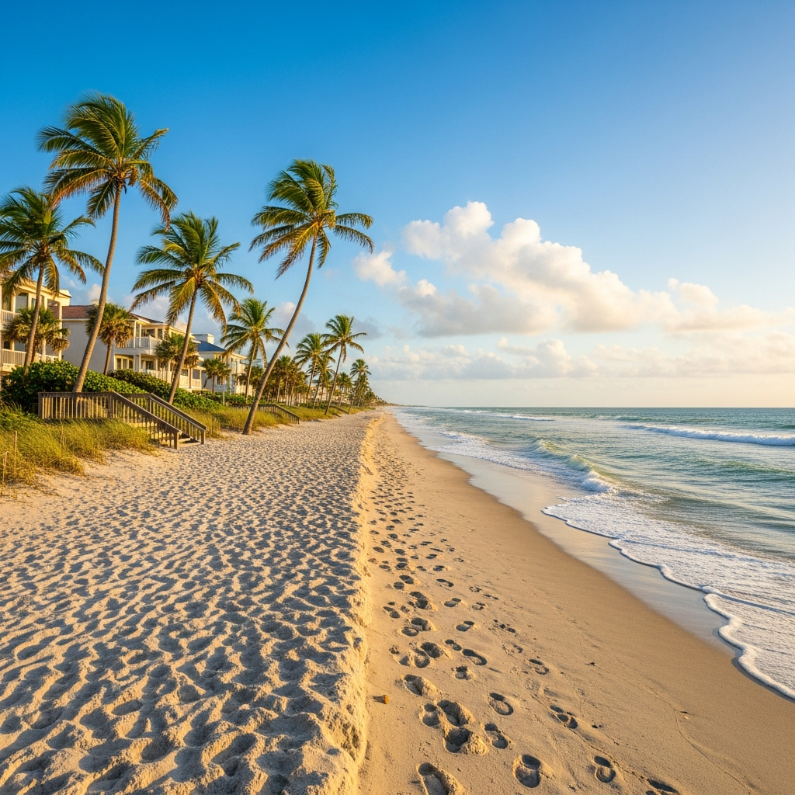
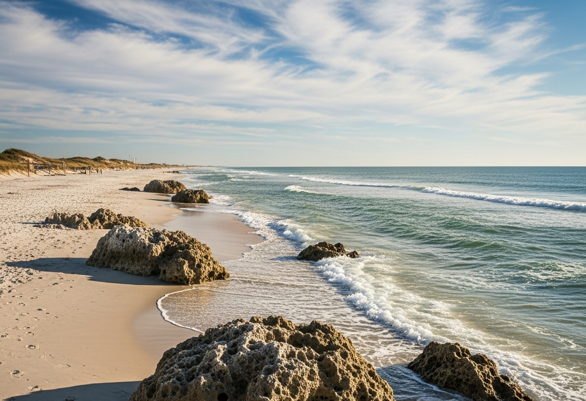
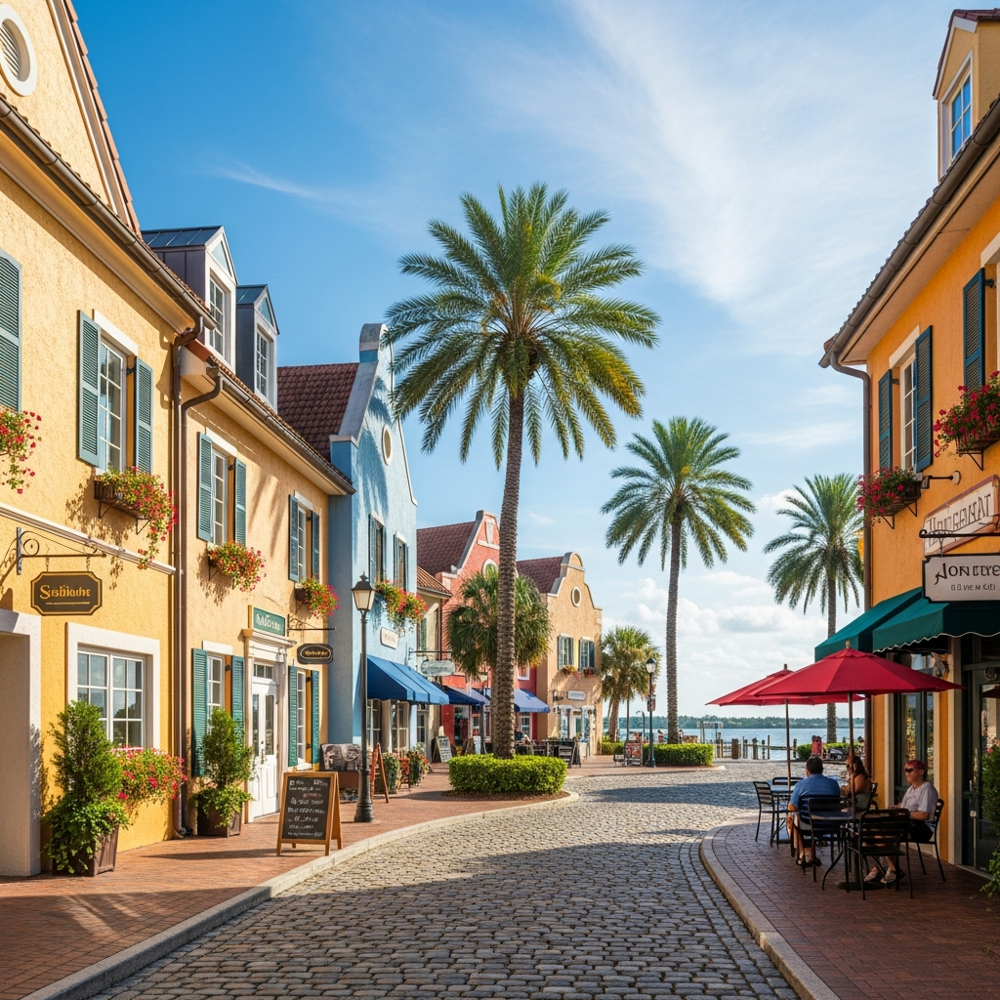

Palm Coast, Florida is a fast-growing coastal city in Flagler County, known for its canals, natural beauty, and vibrant lifestyle. Incorporated in 1999, it has quickly become one of Florida’s largest and most dynamic communities, offering residents and visitors a mix of outdoor recreation, scenic waterways, and suburban amenities.
Key Highlights of Palm Coast, FL
Location & Geography
- Situated in Flagler County along Florida’s east coast.
- Features 70 miles of saltwater and freshwater canals.
- Access to the Intracoastal Waterway.
- Minutes from the Atlantic Ocean beaches
- popular destination for boating, fishing, and beachgoers.
History & Development
- Originally developed in 1969 as a planned community.
- Officially incorporated as a city on December 31, 1999.
- One of Florida’s newest cities.
Population & Growth
The 2020 census recorded 89,258 residents, but by 2025 estimates suggest the population has grown to over 110,000, reflecting rapid expansion. Median age is around 50 years, with a mix of retirees and families.


